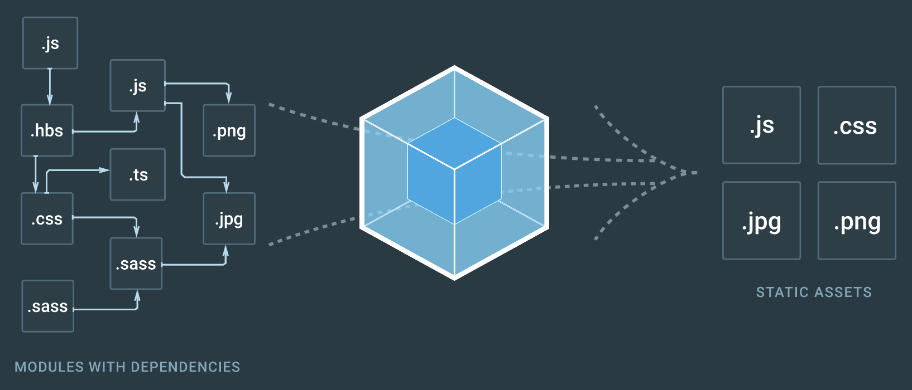
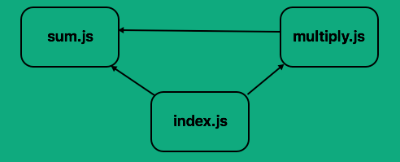
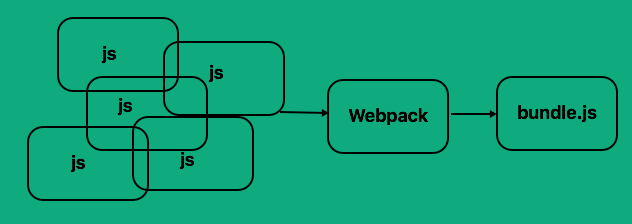

1. Вступ
Webpack — це збирач JS-модулів, менеджер модульних залежностей, який аналізує дерево залежностей і створює один або кілька результуючих файлів, що містять всю кодову базу проєкту. Вибудовує порядок підключення модулів, збирає, мініфіцує, запаковує та багато іншого.

Webpack став одним з найбільш важливих інструментів веб-розробника. В першу
чергу це менеджер модульних залежностей додатків і збирач JS-файлів, але він
може трансформувати всі ресурси - HTML і CSS, SASS, LESS і PostCSS, оптимізувати
зображення, компілювати шаблони, запускати локальний веб-сервер для розробки і
багато іншого.
2. Принцип роботи
Припустимо, у нас є програма, яка може виконувати дві прості математичні задачі:
підсумувати і множити. Ми вирішили розділити ці функції на окремі файли (модулі)
для спрощення підтримки кодової бази. Тоді в Index.html скрипти будуть
підключені в такій послідовності.
<script src="sum.js">script>
<script src="multiply.js">script>
<script src="index.js">script>
Припустимо код з sum.js використовується в multiply.js і index.js, а код з
multiply.js використовується тільки в index.js. Покажемо ієрархію
залежностей на простій діаграмі.

Якщо помилитися в послідовності підключення скриптів в index.html, тобто якщо
index.js включений перед будь-яким з інших залежностей або якщо sum.js
включений після multiply.js, будуть помилки.
Тепер уявімо, що ми масштабуємо це до реального, повністю робочого додатки - можуть бути сотні залежностей. Збереження порядку підключення стане кошмаром.
Webpack перетворює залежності в модулі і пошиє в один або кілька файлів. Кожен
модуль буде мати закритий простір імен і підключатися в потрібний час, в
правильному порядку.

Gulp і Grunt все ще займають гідне місце в інструментарії розробника, і для
деяких проєктів, функціонал Webpack не потрібен, хоча він може відмінно
працювати в зв'язці з ними. Проте, не дивлячись на те що крива навчання може
бути вище при складніших налаштуваннях, Webpack незамінний якщо ви
використовуєте сучасні бібліотеки і фреймворки для розробки, такі як React,
Vue, Angular і т. д.
3. Налаштування
За посиланнями нижче ви знайдете вичерпні пояснення з покроковими поясненнями налаштування Webpack.